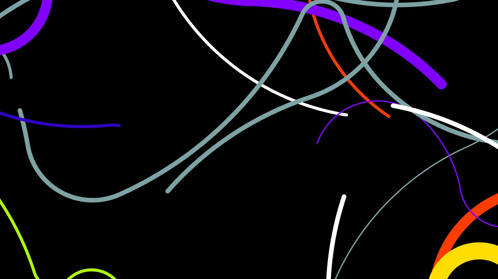

Linear
Compositions
A live audiovisual performance by Matěj Moravec, with live sound by Nathan Solo. Lines on black, drawn in real time and shaped by sound.

The work
Linear Compositions is a study of how lines move and how they answer music. On a black ground, lines in orange, blue, white, yellow, violet, lime and grey-teal grow like snakes, circle a centre, travel as waves and bounce off the edges of the frame. Grids of fine lines are lit by thicker ones that pulse, sweep across the picture or break apart, and the view can fly through the structure like a camera.
Nothing is pre-recorded. The compositions are generated live in TouchDesigner, and the sound in the room is analysed as it plays: deep sounds swell the heaviest lines, mid-range tones the medium ones, and hi-hats and other bright sounds the finest. Chance decides where each line goes; the music decides how it breathes.
The piece unfolds in chapters that flow into one another, and it keeps evolving from show to show.
Its language draws on two sources: the grid, rules and clarity of Swiss graphic design, and the Czech painter Zdeněk Sýkora (1920–2011), above all his work with chance. Linear Compositions is an original work and does not reproduce or imitate any of his paintings.
Video
Stills


© Matěj Moravec, 2026. Original generative compositions; no works by Zdeněk Sýkora are reproduced. High-resolution images and video on request.
Technical
- Format
- Live audiovisual performance, 14 chapters of about 5 minutes with continuous transitions, 1 h 30 min per loop, repeats on its own
- Graphics
- Real-time generative graphics in TouchDesigner, line paths computed by GLSL shaders
- Output
- One 16:9 video output, native 1280 × 720, scalable
- Display
- Projector (image at least 3 m wide) or one or more 16:9 screens, 55 inch minimum (65 ideal), HDMI
Press & contact
Matěj Moravec, visuals · matejmoravec.com
Nathan Solo, live sound · nathansolo.com · e-mail for booking